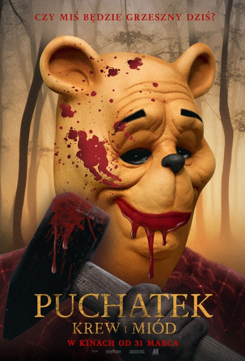

Nominacje i zwycięzcy z 2024 roku
Najgorszy film - wygrana: Puchatek: Krew i miód

- Egzorcysta: Wyznawca
- Niezniszczalni 4
- Meg 2: Głębia
- Shazam! Gniew bogów
Najgorszy aktor - wygrana: Jon Voight – Mercy
Pozostałe nominacje:
- Russell Crowe – Egzorcysta papieża
- Vin Diesel – Szybcy i wściekli 10
- Chris Evans – Randka, bez odbioru
- Jason Statham – Meg 2: Głębia
Najgorsza aktorka - wygrana: Megan Fox – Johnny & Clyde
Pozostałe nominacje:
- Ana de Armas – Randka, bez odbioru
- Salma Hayek – Magic Mike: Ostatni taniec
- Jennifer Lopez – Matka
- Helen Mirren – Shazam! Gniew bogów
Najgorsza aktorka drugoplanowa - wygrana: Megan Fox – Niezniszczalni 4
Pozostałe nominacje:
- Kim Cattrall – Wszystko o moim starym
- Bai Ling – Johnny & Clyde
- Lucy Liu – Shazam! Gniew bogów
- Mary Stuart Masterson – Pięć koszmarnych nocy
Najgorszy aktor drugoplanowy - wygrana: Sylvester Stallone – Niezniszczalni 4
Pozostałe nominacje:
- Michael Douglas – Ant-Man i Osa: Kwantomania
- Mel Gibson – Tajny informator
- Bill Murray – Ant-Man i Osa: Kwantomania
- Franco Nero – Egzorcysta papieża
Najgorszy reżyser - wygrana: Rhys Frake-Waterfield – Puchatek: Krew i miód
Pozostałe nominacje:
- David Gordon Green – Egzorcysta: Wyznawca
- Peyton Reed – Ant-Man i Osa: Kwantomania
- Scott Waugh – Niezniszczalni 4
- Ben Wheatley – Meg 2: Głębia
Najgorszy scenariusz - wygrana: Puchatek: Krew i miód
Pozostałe nominacje:
- Egzorcysta: Wyznawca
- Niezniszczalni 4
- Indiana Jones i artefakt przeznaczenia
- Shazam! Gniew bogów
Nagroda Odkupienia: Fran Drescher
Najgorszy prequel, remake, "zrzynka" lub sequel - wygrana: Puchatek: Krew i miód
Pozostałe nominacje:
- Ant-Man i Osa: Kwantomania
- Egzorcysta: Wyznawca
- Niezniszczalni 4
- Indiana Jones i artefakt (pełny tytuł: Indiana Jones i artefakt przeznaczenia)
Najgorsze combo - wygrana: Kubuś i Prosiaczek – Puchatek: Krew i miód (jako „żądni krwi mordercy”)
Pozostałe nominacje:
- Dowolna para „bezlitosnych najemników” – Niezniszczalni 4
- Dowolna para pazernych inwestorów (remake „Egzorcysty”) – Egzorcysta: Wyznawca
- Ana de Armas i Chris Evans – Randka, bez odbioru
- Salma Hayek i Channing Tatum – Magic Mike: Ostatni taniec